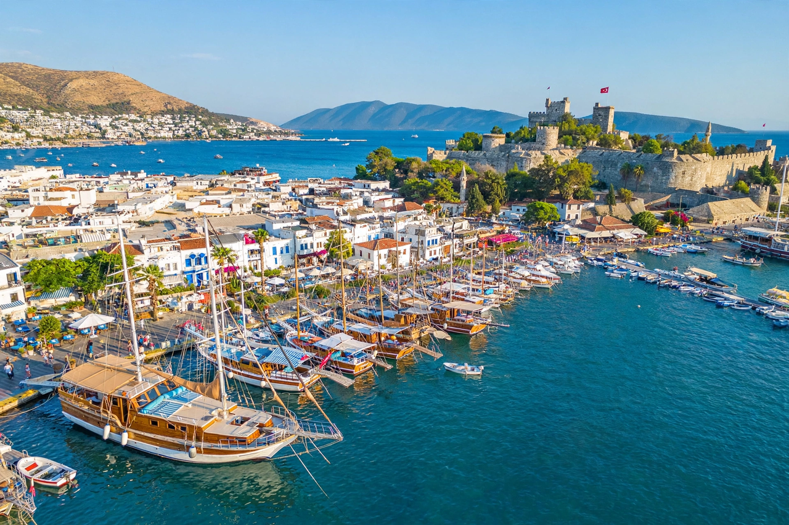

| Bodrum | |
|---|---|
| Country | Turkey |
| Province | Muğla |
| Ancient name | Halicarnassus |
| Population | approx. 175,000 (district) |
| Known for | Mausoleum at Halicarnassus; Bodrum Castle; tourism |

Bodrum is a port city and district on the south-western Aegean coast of Turkey, in Muğla Province. Built on the site of ancient Halicarnassus, the capital of Caria, it was the birthplace of the historian Herodotus and the site of the Mausoleum, one of the Seven Wonders of the Ancient World. Today Bodrum is one of Turkey's most popular holiday resorts, famous for its whitewashed houses, marinas, nightlife and traditional wooden gulets.
Halicarnassus was a Dorian Greek city in the Carian land, which passed under Persian rule as part of the satrapy of Caria. Under the Hecatomnid dynast Mausolus (r. 377–353 BC), who made it his capital, the city was rebuilt on a grand Hippodamian plan with walls, a palace and a great harbour. On Mausolus's death his widow and sister Artemisia II completed his tomb — the Mausoleum — designed by the architects Satyros of Paros and Pythius of Priene, with sculpture by Scopas, Bryaxis, Leochares and Timotheus. Alexander the Great besieged and took the city in 334 BC.
In the early 15th century the Knights Hospitaller built the Castle of St. Peter on the harbour promontory, largely from squared stones robbed from the by-then ruined Mausoleum; green schist and marble reliefs from the tomb can still be seen set into the castle walls. The castle surrendered to Suleiman the Magnificent in 1523 as the Knights departed Rhodes. It now houses the Bodrum Museum of Underwater Archaeology, displaying famous wrecks including the Uluburun Late Bronze Age shipwreck.
For centuries a quiet town of sponge divers, fishermen and shipwrights, Bodrum was transformed after the 1970s into an international resort, helped by the fame of the writer Cevat Şakir Kabaağaçlı, "the Fisherman of Halicarnassus," exiled there in the 1920s. The Bodrum peninsula is lined with resort bays — Gümbet, Bitez, Türkbükü, Yalıkavak — and Milas–Bodrum Airport serves the region. The remains of the Mausoleum's foundations, the ancient theatre and the Myndos Gate survive among the modern streets.